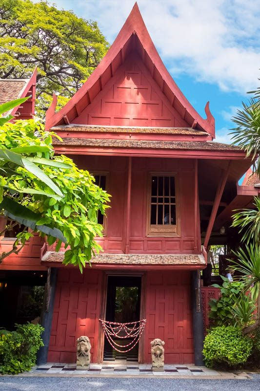
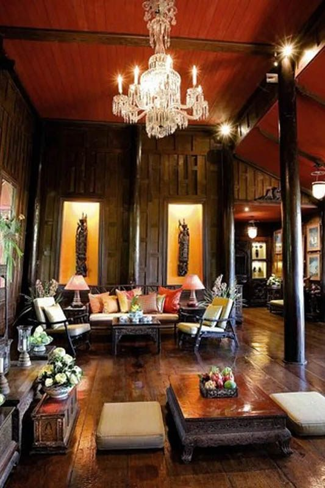

Jim Thompson House stands as Bangkok's premier cultural attraction, a remarkable museum that preserves traditional Thai architecture while telling one of Southeast Asia's most intriguing stories. Located just 2 BTS stops from Royal Ivory + walking Hotel, this historic complex offers visitors an immersive journey through Thai heritage, silk traditions, and the mysterious legend of its American founder.
What makes Jim Thompson House extraordinary is its authentic preservation of traditional Thai architecture and cultural heritage. The complex features six traditional Thai houses assembled by American silk entrepreneur Jim Thompson in the 1950s-60s, creating a living museum that showcases centuries-old craftsmanship alongside priceless antique collections in lush tropical gardens.
For Royal Ivory Hotel guests, Jim Thompson House provides the perfect introduction to Thai culture and history. Whether you're interested in traditional architecture, silk heritage, antique collections, or simply experiencing authentic Thai cultural preservation, this museum offers insights into Thailand's artistic traditions that few other Bangkok attractions can match.
Jim Thompson House is accessible via BTS with a transfer at Siam station, or by direct taxi for convenience. The museum's central location makes it easy to combine with other Siam area attractions for a full cultural day.
Total Cost: 90 Baht one-way | Journey Time: 20-25 minutes | Transfers: 1 at Siam station
🏛️ Royal Ivory Cultural Tip: Plan your visit for morning or early afternoon to avoid tour group crowds. The guided tours are mandatory and excellent - they provide cultural context that makes the experience much richer. Combine with nearby MBK Center or Siam area shopping for a complete day out.
Understanding Jim Thompson's remarkable story enhances appreciation for the museum and its significance in Thai cultural heritage. His life reads like an adventure novel, from wartime intelligence operative to silk industry pioneer to mysterious disappearance.
| Period | Key Events | Significance | Cultural Impact |
|---|---|---|---|
| 1940s | OSS agent, arrived Bangkok 1945 | Post-war Thailand connections | East-West cultural bridge |
| 1950s | Founded Thai Silk Company | Revived dying silk industry | International Thai silk recognition |
| 1960s | Assembled traditional houses | Preserved Thai architecture | Cultural conservation pioneer |
| 1967 | Mysterious disappearance | Enduring legend created | Cultural icon status |
Jim Thompson's disappearance in Malaysia's Cameron Highlands on March 26, 1967, remains one of Southeast Asia's greatest unsolved mysteries. Despite extensive searches and investigations, no trace was ever found, adding an element of intrigue that continues to fascinate visitors and researchers worldwide.

The museum complex consists of six traditional Thai houses, each representing different regional styles and periods. Jim Thompson carefully selected and relocated these structures, creating an architectural ensemble that showcases the evolution of Thai residential design over several centuries.
Each house in the complex serves a specific function and represents different aspects of traditional Thai living. From reception areas to private quarters, storage to ceremonial spaces, visitors experience how wealthy Thai families lived in centuries past, while understanding the cultural significance of architectural choices.
Regional diversity: Houses from different Thai regions showing local variations
Historical periods: Structures spanning 150+ years of Thai architecture
Authentic preservation: Original construction techniques and materials
Living heritage: Functional spaces demonstrating traditional lifestyle
Jim Thompson's passion for collecting resulted in one of Southeast Asia's finest assemblages of Asian art and antiques. The collections span centuries and cultures, from Khmer sculptures to Chinese ceramics, creating a comprehensive survey of regional artistic traditions.
🎨 Cultural Education Experience:
Guided tours: Expert guides explain cultural significance and historical context
Multiple languages: Tours available in English, Thai, and other languages
Interactive elements: Opportunities to touch and examine certain artifacts
Photography rules: Exterior photography allowed, interior restrictions apply
Educational value: Perfect introduction to Southeast Asian art and culture
The museum's lush tropical gardens provide a serene oasis in central Bangkok while demonstrating traditional Thai landscape design. The gardens complement the architecture and create an immersive environment that transports visitors from urban Bangkok to traditional Thailand.
🛍️ Authentic Shopping Experience:
Silk products: Authentic Jim Thompson silk scarves, clothing, and accessories
Home decor: Cushions, bags, and decorative items in Thai silk
Books & guides: Publications about Thai culture, architecture, and history
Quality guarantee: All products authentic and ethically sourced
Cultural souvenirs: Meaningful mementos of Thai heritage experience
Jim Thompson House operates as a professional museum with specific guidelines designed to preserve the historic structures while providing meaningful cultural experiences for international visitors.
| Category | Details | Important Notes | Tips |
|---|---|---|---|
| ⏰ Operating Hours | 09:00-18:00 daily | Last tour starts 17:30 | Morning visits less crowded |
| 🎫 Admission | 200฿ adults, 100฿ children | Guided tour included | Excellent value for experience |
| 👟 Dress Code | Conservative, covered shoulders | Shoe removal required inside | Comfortable walking shoes |
| 📸 Photography | Exterior allowed, interior restricted | Preservation requirements | Garden photos encouraged |
From Royal Ivory Hotel: Take BTS Sukhumvit Line from Nana to Siam (2 stops), transfer to BTS Silom Line to National Stadium (1 stop), then 5-minute walk to Jim Thompson House. Total journey: 20-25 minutes including transfers and walking.
Jim Thompson House is open daily 09:00-18:00. Last tour starts at 17:30. Admission: 200 Baht adults, 100 Baht children. Guided tours included in admission price and are mandatory for house interior access. Tours available in multiple languages.
Jim Thompson was an American businessman who revived the Thai silk industry in the 1950s-60s and became a legendary figure in Bangkok's expat community. He mysteriously disappeared in Malaysia's Cameron Highlands in 1967. His house showcases his antique collection and preserves traditional Thai architecture.
The museum features six traditional Thai houses with antique collections, Buddha statues, ceramics, silk textiles, traditional architecture, lush tropical gardens, silk weaving demonstrations, and guided tours explaining Thai culture and Jim Thompson's fascinating life story.
Plan 1.5-2 hours for a complete visit including guided house tour (30-40 minutes), garden exploration, museum shop browsing, and photo opportunities. Combine with nearby Siam area attractions for a full cultural day in central Bangkok.
Jim Thompson House offers more than a museum visit - it provides deep insights into Thai culture, traditional crafts, and architectural heritage while telling one of Bangkok's most fascinating stories. The experience connects visitors with authentic Thai traditions in ways that few other attractions can match.
Morning culture: Jim Thompson House followed by Grand Palace for royal heritage
Traditional + modern: Museum visit then Siam Paragon for contemporary Bangkok
Cultural immersion: Combine with Wat Arun Temple for spiritual and artistic heritage
Complete experience: Traditional culture morning, modern shopping afternoon